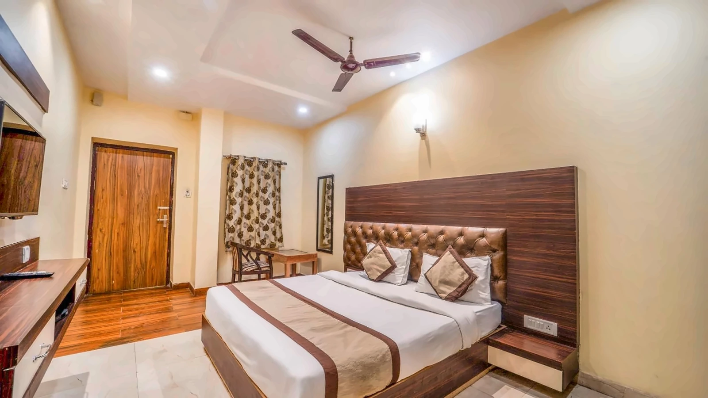

Augusto.
Rooms
Varanasi
Gallery
Contact
Plan your stay ↗
Menu ☰
Composition study · not production UI
Godowlia, Varanasi
Hotel
Augusto.
A stay in the old city, close to the temple and the ghats.
Explore the rooms ↗
Book on WhatsApp ↗
The Varanasi riverfront · destination photograph

At Hotel Augusto
Explore our rooms
↗